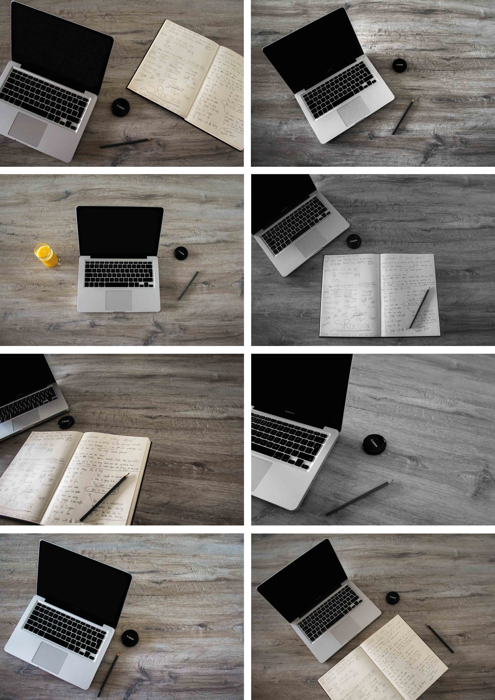
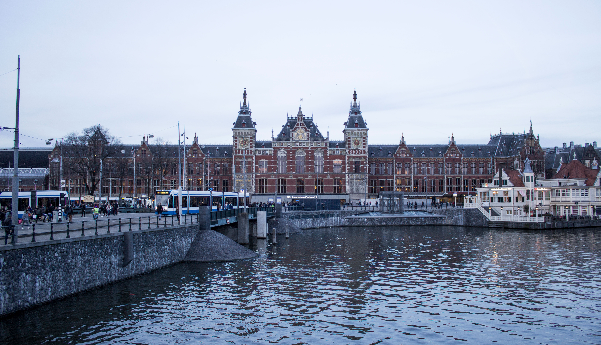

Omgeving Amsterdam fotograferen. De plekken hebben te maken over het uiterlijk van Amsterdam.
Fotografie
Allemaal foto's
Focus op object
Amsterdam


Door de verschillende vormen/perspectieven kan je weten dat het gaat om Amsterdam.
Pesterij typografie
Pesterij is nog steeds tot de dag van vandaag. Met deze foto wil ik de mensen bewust maken van deze gebeurtenis.
Op de foto staan woorden in het lichaam van het kind die te maken hebben met pesterij.